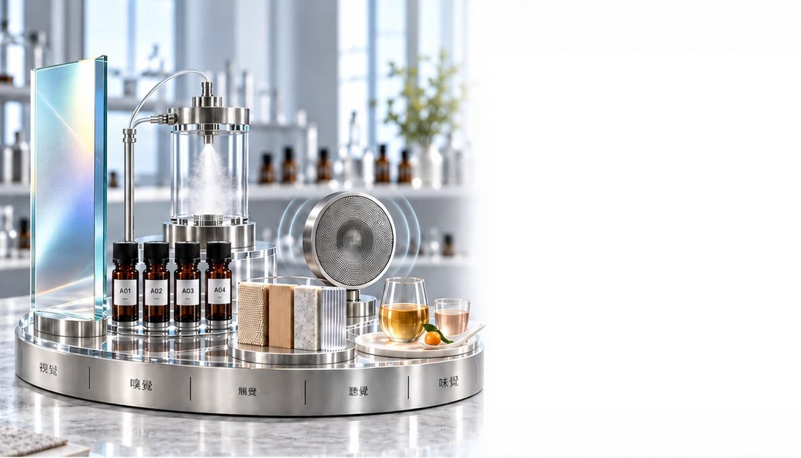

我們共同創造的成果
從概念到市場的四條整合路徑
針對產品、
感官、品牌與功能創新，提供量身打造的開發服務。


產品
開發與 ODM
從產品構想到可零售的成品
我們將您的概念轉化為針對目標市場設計的獨特產品。
- 客製化配方
- 產品形式與感官輪廓
- 包裝與定位方向
- 從原型到生產的協調

香氛零售
產品開發
從香氣概念到可上市的系列產品
我們開發獨特的香氛產品，將您的品牌香氣方向轉化為可零售的產品形式。
- 高級香氛 · 居家香氛 · 個人香氣
- 擴香產品 · 空間與織品噴霧
- 香氣配方與產品形式
- 包裝方向 · 打樣 · 生產協調

客製化感官與
香氣設計
為您的品牌創造獨特的感官語言
視覺 · 嗅覺 · 觸覺 · 聽覺 · 味覺
我們結合感官線索，圍繞您的品牌與受眾，設計一致而獨特的體驗。
- 視覺調性與光線 · 芳香與嗅覺方向 · 質地與材質
- 聲音與味覺 · 整合體驗準則

將香氣融入
日常生活
從創造香氣到親身體驗
我們將每種香氣融入人們實際體驗它的場所、產品與日常儀式。
- 抵達與迎賓 · 休息、專注與恢復
- 個人與居家儀式 · 零售接觸點

功能性香氣
創新
為明確目的設計香氣
我們開發以實證為導向的香氣概念，超越單純令人愉悅的芳香，打造具有明確目的的產品與環境體驗。
- 生物反應性芳香概念
- 情緒 · 專注 · 放鬆 · 睡眠方向
- 活性芳香成分與實證審閱
- 產品、空間與原型應用設計

從功能性香氣
到實際應用
為產品、空間與日常活動而設計
我們將功能性芳香概念轉化為實用形式、傳遞系統與體驗，並針對特定使用時刻進行設計。
- 個人身心健康與芳香療法
- 護膚 · 個人護理 · 穿戴式形式
- 專注 · 放鬆 · 恢復 · 睡眠環境
- 傳遞特性 · 原型與體驗評估

一起共同創造
從您的目標到可上市的獨特體驗
與我們分享您的產品構想、感官方向或功能目標。我們將攜手將它形塑為清晰、獨特且準備好邁向下一步的成果。